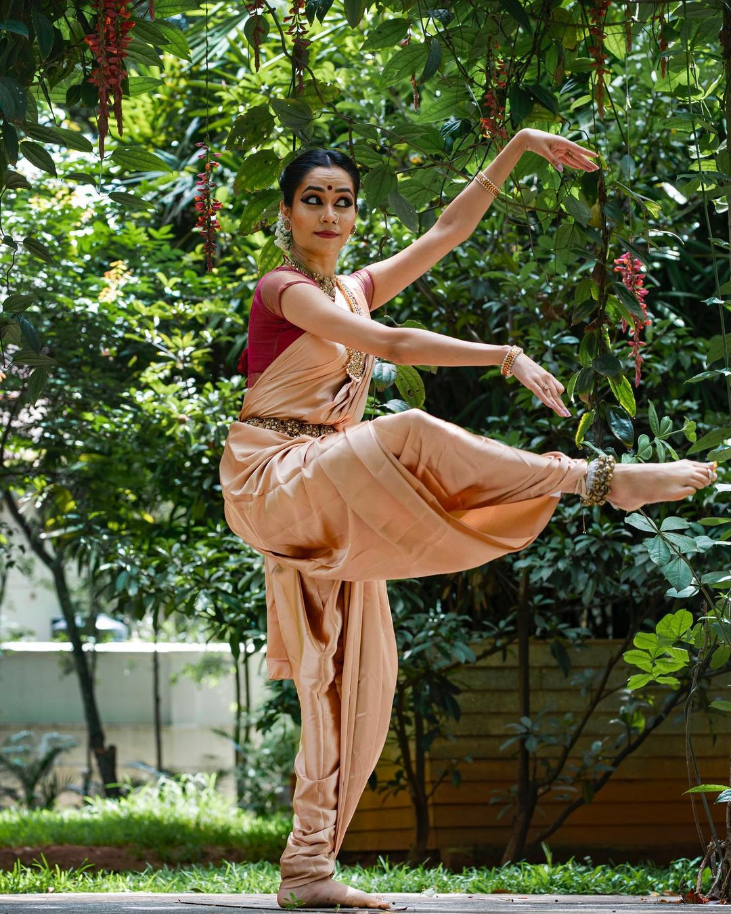

Hip Hop
Hip Hop Dance is a style of movement characterized by bounces and rocks executed to Hip Hop music....
Read more
Contemporary
Contemporary dance is a genre of dance performance that developed during the mid-twentieth century and....
Read moreLocking
The Locking art form is now defined as the expression of the individual using the Lock as the base....
Read moreHouse
House Dance is a style of dance that originated in the late 70’s and early 80’s from underground clubs in Chicago and New York....
Read moreBharatnatyam and more classical styles
Bharatanatyam, also previously called Sadhir Attam, is a major form of Indian classical dance that originated in Tamil Nadu....
Read more Jazz
Jazz dance is a social dance style that emerged at the turn of the 20th century when African American dancers....
Read moreLitefeet
The name “Lite Feet” refers to the (almost) weightless footwork that’s used in many of the foundational moves....
Read more